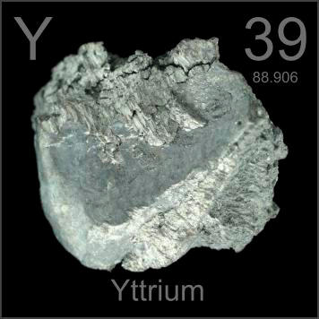

HOME
PREVIOUS
NEXT

Yttrium
Atomic Weight: 88.90584
Density: 4.472 g/cm3
Melting Point: 1526 °C
Boiling Point: 3345 °C
Yttrium is rarely seen in pure form and has no applications as a metal. Yttrium-aluminum-garnet (YAG) is important in lasers and yttrium is also used in the phosphors of color television sets (the old CRT kind).